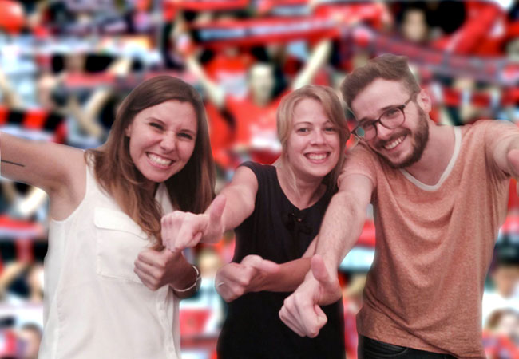
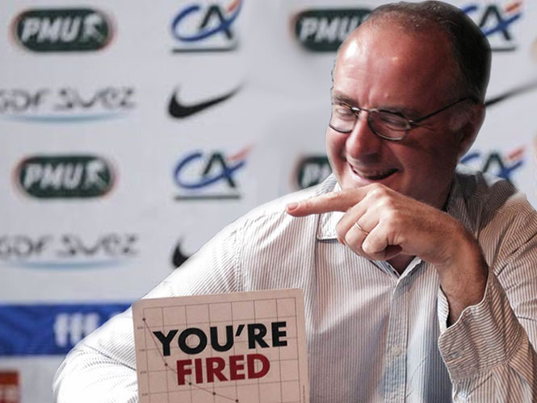
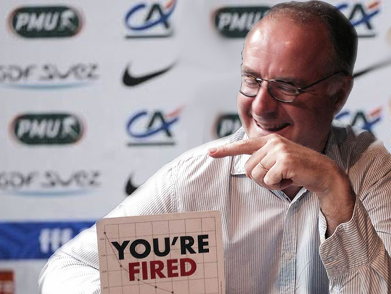
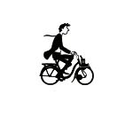
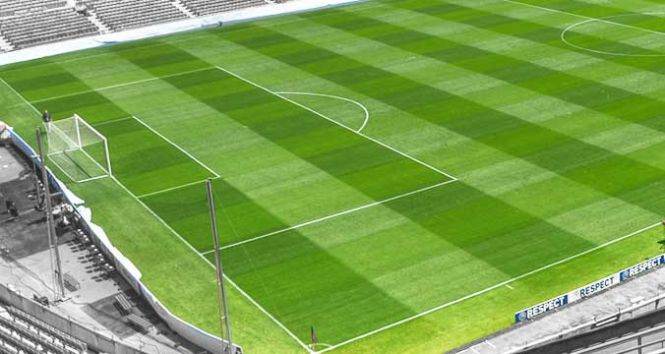

Le
Foot
Coupe inter-entreprises Les Geeks infligent une défaite historique à Merci Alfred en demi-finale de la Coupe inter-entreprises (7-1) !
Sur ses terres, Merci
Alfred a été humilié (et on pèse nos mots) par les Geeks, ce jeudi en
demi-finale de la Coupe inter-entreprises (1-7 !) à L'Urban Foot, porte
de la Chapelle. Après deux victoires consécutives, les Geeks confirment
leur supériorité sur Merci Alfred.
Les Geeks ont infligé une raclée historique à Merci Alfred. (L'Epuiqe)
Le match
Il n’aura pas duré 30 minutes... Après avoir tenté d’imprimer un rythme élevé à la partie, Merci Alfred
a très vite affiché ses limites, et son adversaire n’a pas tardé à les
exploiter avec sang-froid. Très froid, même. Sur un corner de Pierre,
d’abord, Jocelyn a bénéficié d’une incroyable erreur capillaire de
Dovale pour ouvrir le score de près (11e). L’Urban Foot a assisté à un
moment d’histoire ensuite, avec le seizième but en Coupe inter-entreprise de l’inoxydable Charles
au cœur d’une défense apathique (23e). Sonnés, les Alfreds ont
complétement lâché prise, et six minutes plus tard, alors que Maxime F.
motivait ses troupes en chanson, ils avaient encaissé trois buts
supplémentaires !
David A. en a profité pour inscrire un doublé, d’abord à la réception d’un centre de Pierre (24e), puis idéalement servi par Romain (26e). C’est ce dernier qui a planté la cinquième flèche après une nouvelle action d’école (29e). Merci Alfred a bien attaqué la seconde période avec ce qui lui restait d’envie et d’honneur... Autant dire très peu. Mais Charles était là, décisif face à Maxime, Guillaume ou Thomas, avant que Pierre n’ajoute un sixième (69e) puis Jocelyn un septième but (79e), devant un public alfredesque résigné et déjà occupé depuis de longues minutes à huer son équipe. Toujours sous les sifflets... Merci Alfred a finalement trouvé la faille par Thomas à la 90e minute lorsque les Geeks s'étaient complètement relachés et commençaient à rejoindre les vestiaires.

David A. en a profité pour inscrire un doublé, d’abord à la réception d’un centre de Pierre (24e), puis idéalement servi par Romain (26e). C’est ce dernier qui a planté la cinquième flèche après une nouvelle action d’école (29e). Merci Alfred a bien attaqué la seconde période avec ce qui lui restait d’envie et d’honneur... Autant dire très peu. Mais Charles était là, décisif face à Maxime, Guillaume ou Thomas, avant que Pierre n’ajoute un sixième (69e) puis Jocelyn un septième but (79e), devant un public alfredesque résigné et déjà occupé depuis de longues minutes à huer son équipe. Toujours sous les sifflets... Merci Alfred a finalement trouvé la faille par Thomas à la 90e minute lorsque les Geeks s'étaient complètement relachés et commençaient à rejoindre les vestiaires.
Les Geeks : cette équipe le méritait tellement
Le
match était fini depuis plus d'une heure et demie quand Jocelyn s'est
présenté devant la presse, jeudi soir, dans l'amphithéâtre de L'Urban.
Mais l'émotion était encore intacte... «Nous avons toujours su que ce ne
serait pas seulement l'histoire de cinq joueurs, mais de tout un
groupe, notre groupe. Il fallait que chacun se tienne prêt. On savait
qu'il fallait muscler notre jeu et jouer collectivement pour venir à
bout de cette équipe de Merci Alfred. Aujourd'hui tout le monde était
prêt. A la fin du match, l'équipe des Alfred ont pu rentrer tôt chez eux, peut être aurons-nous nos
BAT à l'heure.» déclairait Jocelyn Kerbourch' avec un léger ton moqueur.
Guillaume Declair, c'est fini
Comme pressenti et annoncé le lendemain dans les bureaux, Guillaume
Declair n'est plus le responsable de Merci Alfred. La Direction a
annoncé son départ dans l'après-midi : «La démission a été acceptée par
le président Bruno Vuillier qui a remercié tous les membres du comité
technique et les joueurs, nous explique-t-on dans un communiqué. Declair
et tout son comité technique méritent notre respect et notre
gratitude.» Avec la défaite de samedi contre les enfants des salariés
(0-3) et maintenant celle face aux Geeks, Guillaume, qui avait mené Merci Alfred sur les sommets parisiens
en 2013, avait déclaré qu'il revenait au président de MLP de statuer sur
son sort. Bruno Vuillier n'en demandait pas tant !


La déception chez Merci Alfred
Les supporters nourrissaient de grands espoirs et misaient beaucoup sur les
joueurs de Merci Alfred. Et à juste titre au vu de leurs dernières saisons. Malheureusement, c'était sans
compter sur la rigueur et l'efficacité des Geeks, certainement moins
gênés par leurs cheveux et leurs chemises blanches.
-
1
7

MERCI ALFRED
90eThomas
GEEKS
11eJocelyn K.
23eCharles M.
24eDavid A.
26eDavid A.
29eRomain E.
69ePierre D.
79eRomain E.
